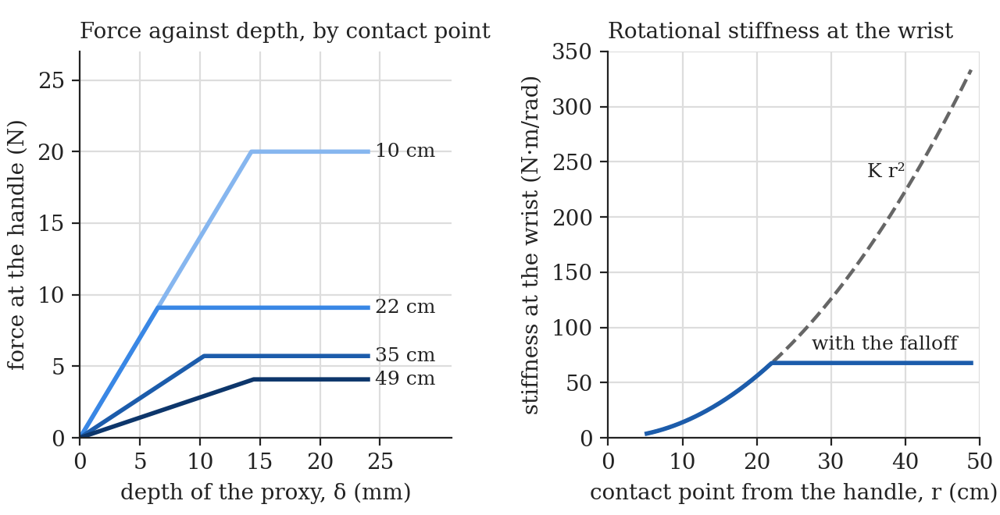
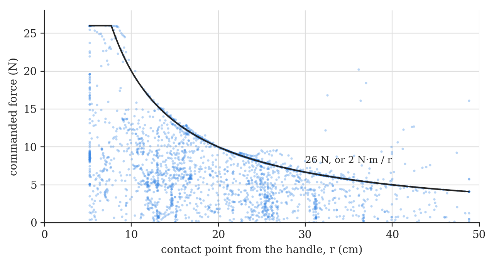
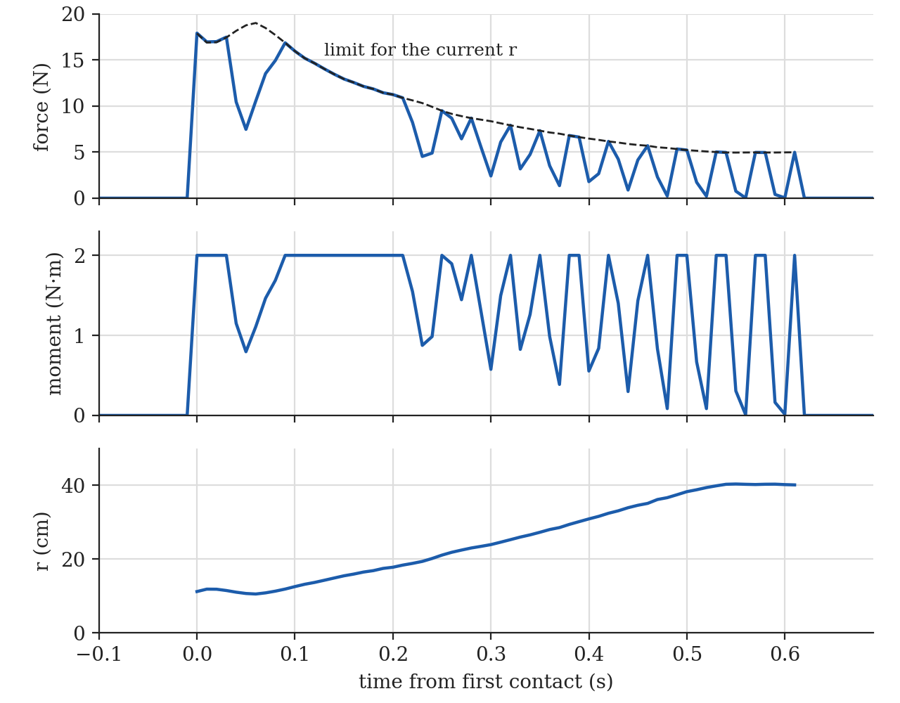
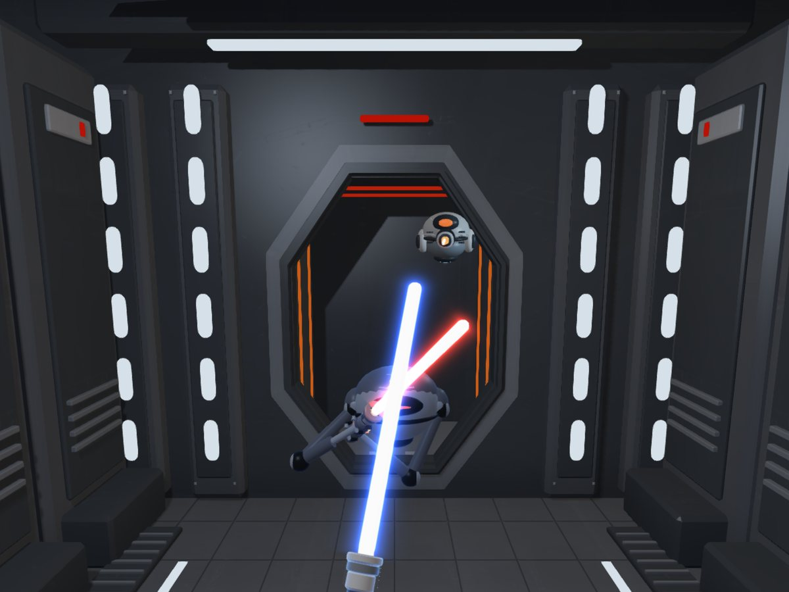
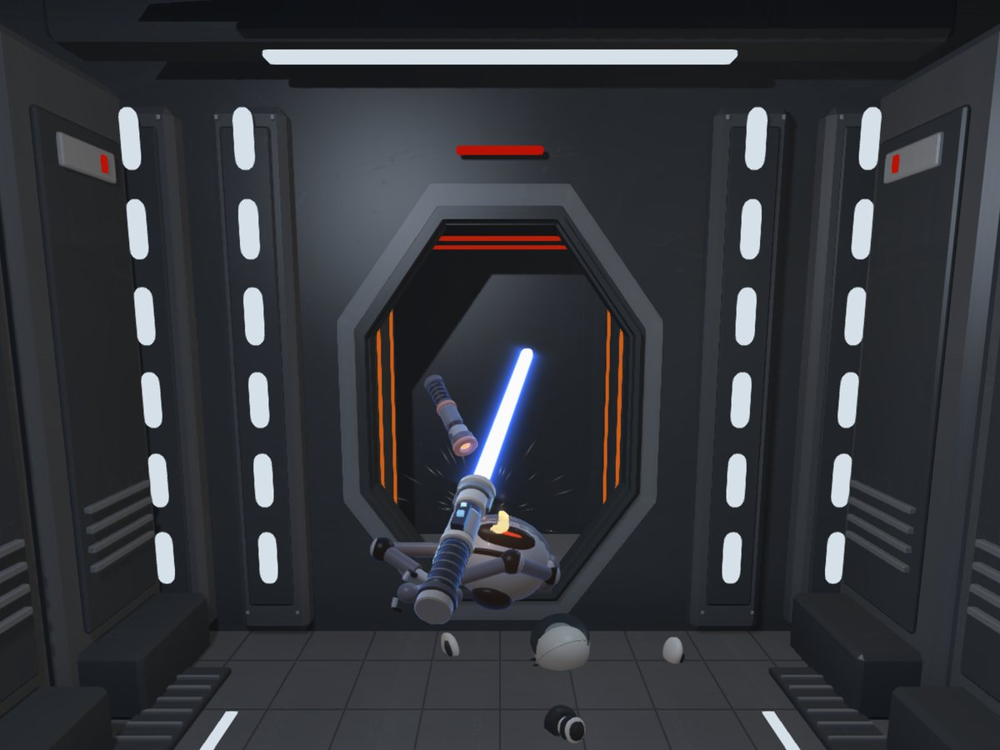
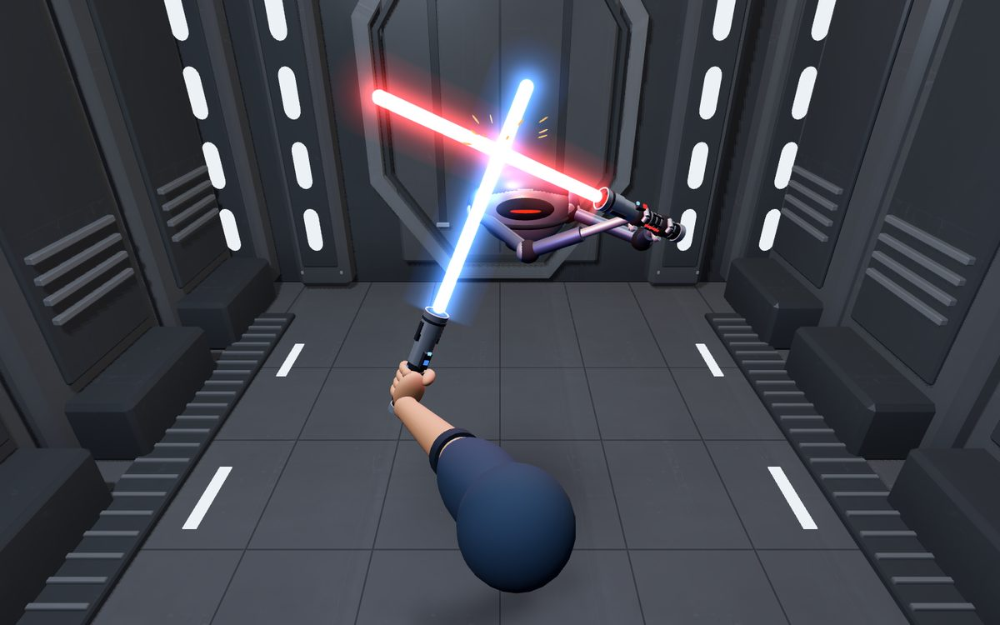
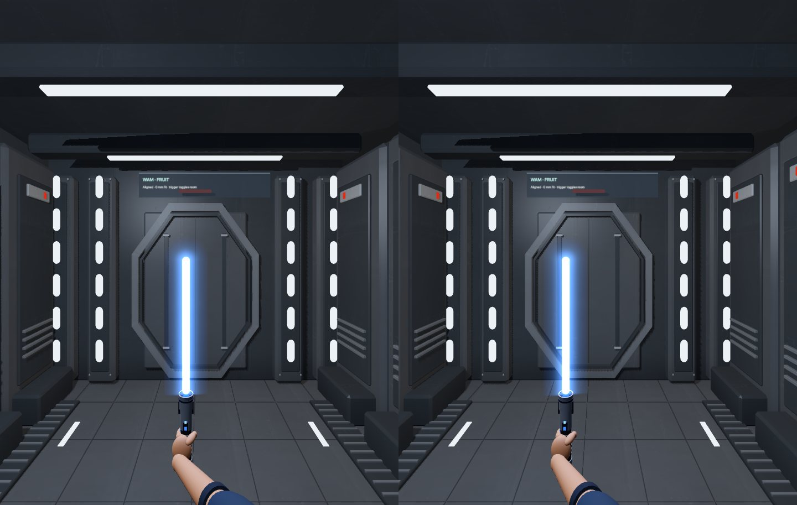

A haptic lightsaber game
This is a sword-fighting game for a WAM with the haptic wrist. The wrist’s handle is the hilt. The arm sets where the hilt is and the wrist sets where the blade points, roll included. When my blade meets the droid’s, the arm and the wrist push back, and how hard depends on where along the blade the hit lands. At IROS 2026 in Pittsburgh, visitors play it at Barrett’s booth.
The game and its haptics are C++ on libbarrett, inside the arm’s 500 Hz control loop. Game state goes out over UDP at 100 Hz to a desktop viewer, and later to a Meta Quest 3 viewer as well, which runs in the headset’s browser with stereo and head tracking. The viewers are display only and never send commands to the robot. There are two modes, fruit slicing and sparring, each with five difficulty levels.
How the force is rendered
Every 2 ms the loop reads the joint angles, and libbarrett’s forward kinematics give the handle’s position \(\mathbf p\), its velocity \(\dot{\mathbf p}\) and its orientation. The blade runs along one axis of the wrist frame, \(\hat{\mathbf b}\), from 4 cm to 50 cm out from the handle. The game steps the fruit and the droid, checks for contact, and returns a single force \(\mathbf F\) and moment \(\mathbf M\) about the handle.
Several of the contact forces depend on how fast the blade is moving at the contact point, and with a wrist that’s mostly rotation. The game estimates the blade’s angular velocity from how the blade axis and the edge axis \(\hat{\mathbf e}\) have turned since the last step, smooths it with a first-order filter that cuts off near 13 Hz, and gets the velocity of any point \(\mathbf c\) on the blade from it:
\[ \boldsymbol\omega_k = \boldsymbol\omega_{k-1} + 0.15\left(\frac{\hat{\mathbf b}_{k-1}\times\hat{\mathbf b}_k + \hat{\mathbf e}_{k-1}\times\hat{\mathbf e}_k}{2\,\Delta t} - \boldsymbol\omega_{k-1}\right) \] \[ \mathbf v(\mathbf c) = \dot{\mathbf p} + \boldsymbol\omega \times (\mathbf c - \mathbf p) \]Finding the contact
Both blades are capsules with the 12 mm radius of their white cores. The glow doesn’t count. They touch when their axes come within 24 mm. A fast cut can cross the red blade between two 2 ms steps, so both blades are swept between steps, with up to 16 samples spaced about 8 mm apart. If the tracked blade jumps more than 25 cm in one step, the game throws the contact history away.
The droid’s shell is 11 fitted ellipsoids, and its arms are capsules: 18 mm for the arm housings, 10 mm for the wrist rods, 29 mm for the joints and 25 mm for the hands. The game takes the first surface along my blade, so the red blade crossing in front screens whatever is behind it. Fruit are spheres, tested against the closest point on the blade’s axis.
The room is only scenery. The one force from the environment is a soft fence that keeps the handle inside a 45 × 55 × 55 cm box, the same play box as Barrett’s haptic_world demo, at 1100 N/m and 14 N·s/m past each face.
Blade against blade
If the blade-on-blade force were a spring on the overlap, a hard enough push would carry my blade through the red one, and once the axes crossed the spring would flip and push me the rest of the way. So the game keeps a proxy of my blade that can’t enter the red one. When the blades first touch it fixes the contact normal \(\hat{\mathbf n}\). From then on, each step, it finds the smallest shift \(\delta\) along \(\hat{\mathbf n}\) that moves the proxy clear of the red capsule, by bisection with 32 halvings, keeping the measured orientation. The proxy stays on the side it came in from until I pull back or slide off the rounded end of either blade, so pushing through a block can’t cut the droid behind it. It’s the finite-coupling proxy described in CHAI3D’s haptic rendering notes, reduced to translation.
The handle is coupled to the proxy by a spring and a damper:
\[ \mathbf F_c = g(r)\,\big[K\,\delta + D\,\max(0,\,-v_n)\big]\,\hat{\mathbf n}, \qquad \mathbf M_c = (\mathbf c - \mathbf p)\times\mathbf F_c \] \[ g(r) = \min\!\left(1,\ \frac{r_0^2}{r^2}\right), \qquad r = \lVert \mathbf c - \mathbf p \rVert \]with \(K = 1400\) N/m, \(D = 22\) N·s/m and \(r_0 = 0.22\) m. Here \(\mathbf c\) is the contact point on my blade and \(v_n\) is the speed of my blade relative to the red one along \(\hat{\mathbf n}\). The damper only acts while the blades are closing, so the contact can push but never pull. There’s no friction along the blade and no added vibration. A held press is a steady push.
The \(g(r)\) term is there because of the wrist. For small rotations, a contact at distance \(r\) from the handle feels to the wrist like a rotational spring with a stiffness of \(K r^2\) about the handle. Near the tip, 49 cm out, that’s 330 N·m/rad, about five times the value at 22 cm. On September 24 the wrist rumbles hard on contacts near the tip, so beyond 22 cm both gains now fall off as \((r_0/r)^2\). Past that point the wrist feels the same 68 N·m/rad wherever the hit lands, and the hand feels a softer push the farther out it is.

Fruit and the droid’s body
A fruit cuts when the blade moves across it faster than 0.22 m/s relative to the fruit, in any direction. Slower than that, it rests on the blade on a soft spring, 550 N/m with 8 N·s/m, and the reaction pushes the fruit around through its mass. A cut is a drag against \(\mathbf v_\perp\), the blade’s velocity relative to the fruit with the part along the blade removed:
\[ \mathbf F_{\text{cut}} = -\left[\frac{0.28\,c\,\big(0.3 + 0.7\sqrt{\hat d}\,\big)}{\lVert\mathbf v_\perp\rVert + 0.45} + \frac{p\,\sin(\pi t / t_r)}{\lVert\mathbf v_\perp\rVert + 0.12}\right]\mathbf v_\perp \]Speeds are in m/s. The first term is the flesh. It grows with the depth \(\hat d\), measured as a fraction of the fruit’s radius, and levels off for fast cuts so the fruit still feel different from each other during a quick wrist flick. The second is a half-sine rind break over the first \(t_r = 24\) ms. The whole thing eases in over 8 ms and out over the last 45 ms of the cut, fades in over the first 10 mm of depth, stops as soon as the blade leaves the fruit, and is capped at 10 N per fruit. Like every other force here it acts at the contact point, so its moment \((\mathbf c - \mathbf p)\times\mathbf F_{\text{cut}}\) twists the wrist harder for a cut near the tip.
| Watermelon | 76 mm radius, \(c = 34\) N·s/m, \(p = 10.5\) N, 0.30 s |
|---|---|
| Apple | 47 mm, 20 N·s/m, 8.5 N, 0.20 s |
| Orange | 52 mm, 16 N·s/m, 6.3 N, 0.22 s |
| Plum | 43 mm, 12 N·s/m, 5.0 N, 0.18 s |
From level 4 up there are bombs. Touching one gives a 30 Hz buzz that dies away over 0.32 s, starting at 13 N on the arm and 1.1 N·m on the wrist.
The droid’s body works the same way with harder numbers. A sideways cut faster than 0.28 m/s through an arm or the chassis gets a drag of 14 N·s/m for 90 ms through an arm or 24 N·s/m for 130 ms through the chassis, an 8 or 10 N pop at the shell, and a light 65 Hz rattle at 12% of the drag, capped at 12 N. A slower brush only clangs. A tip pushed into the shell meets a spring of 450 N/m and 6 N·s/m, capped at 8 N, until it’s 6 mm in and still moving inward faster than 6 cm/s, and then it goes through.
Adding it up
All the contributions are summed, each force with its moment about the handle. The total is then scaled as one wrench, so the ratio of force to moment survives the limit:
\[ s = \min\!\left(1,\ \frac{26\ \mathrm{N}}{\lVert\mathbf F\rVert},\ \frac{2\ \mathrm{N{\cdot}m}}{\lVert\mathbf M\rVert}\right), \qquad (\mathbf F,\,\mathbf M) \leftarrow s\,(\mathbf F,\,\mathbf M) \]For one blade contact with the force square to the blade, the largest force is \(\min(26\ \mathrm{N},\ 2\ \mathrm{N{\cdot}m}/r)\). The moment limit takes over 7.7 cm from the handle, which is nearly the whole blade. So for most hits, how far out the contact is sets how hard the arm can push. The 2 N·m is about a quarter of the wrist’s 8.4 N·m peak.

Joint torques
libbarrett maps the wrench to joint torques with the transposes of the linear and angular parts of the tool Jacobian:
\[ \boldsymbol\tau = J_v(\mathbf q)^{\mathsf T}\,\mathbf F + J_\omega(\mathbf q)^{\mathsf T}\,\mathbf M \]On the arm with the haptic wrist, the point the game treats as the handle is the wrist centre, where the three wrist axes meet. Turning a wrist joint doesn’t move that point, so the wrist columns of \(J_v\) are zero and the wrist motors only ever carry the moment. The force goes to the four arm joints, which also take part of the moment. J5 on this arm has no motor, so its entry is dropped. Then the whole vector is scaled once more, so that no joint goes past its cap and the direction of the torque is kept:
\[ \boldsymbol\tau \leftarrow \boldsymbol\tau\,\min\!\left(1,\ \min_i \frac{\tau_{\max,i}}{\lvert\tau_i\rvert}\right) \]The caps are 25, 20, 15 and 15 N·m on J1 to J4 and 2 N·m on each wrist joint. libbarrett’s gravity compensation is added separately, outside these limits. On a plain four-joint WAM with no wrist, the blade’s aim is fixed in the room and only \(J_v^{\mathsf T}\mathbf F\) is sent, since a moment would twist the arm toward a rotation the virtual blade can’t make.
The rest of the safety is outside the game. The safety board faults the arm if any of J1 to J4 goes past 4 rad/s. It starts out at 3 and gets raised after a fast forearm roll trips it at 3.3 rad/s. The program also polls the safety mode at 10 Hz, and if the arm leaves active mode for any reason it turns the haptics off for the rest of the run. Without that, forces computed while the arm is idle would come back at full strength on the next activation, wherever the arm has sagged to.

Opponents
On the arm there are two. The sparring droid hovers in front of you and holds a red saber in two arms, gripping the hilt at two points. It only defends. It watches my blade, predicts where a cut is going and moves a crossing guard into its path, under limits on how fast the guard can move and turn, so a quick change of angle can still get around it. Higher levels read a cut earlier and protect the hands better, and the guard gets a little quicker. The forces are the same at every level. A cut that gets around the guard can take off an arm, which slows its reactions, or destroy the chassis, and a replacement drops in after the wreck.
The booth build adds a second opponent. Every so often the door at the back opens and a sentry floats out and fires slow bolts at you. A blade held in the path knocks a bolt aside. Swinging into it, or bringing the blade into line within 240 ms of its arrival, sends it back at the sentry. A deflection is a 3.5 N half-sine push on the handle lasting 50 ms.




The headset adds more opponents, in a controller practice mode with no robot at all. You hold a Quest controller as the hilt, the same Python game runs the fight, and the controller vibrates on clashes, blocks and cuts in place of force feedback.
The opponents are a walking droid with one saber, a four-armed droid that fights with up to four blades, and a tall assassin droid. They attack as well as defend. An attack starts with a wind-up and is aimed at whatever part of you your blade leaves open. A blade in its path blocks it, and a fast counter-swing parries it and staggers the droid. At the middle level they chain two-hit combos, and at the top level three, with feints. Each body is a rig of rigid bones posed every 1/240 s, with planted feet, two-bone IK for the arms and legs, and hit volumes that match what’s drawn. Some of their habits come from a recorded practice session, where the player holds the arm out with the tip 1.1 to 1.2 m ahead of the eyes. The better droids now measure your reach and stand just outside it. These opponents aren’t connected to the robot, so on the arm you still fight the hovering droid.
The headset viewer




The headset viewer runs in the Meta Quest Browser with WebXR and Three.js, so there’s no app to install. A small Python bridge on the computer receives the same UDP telemetry as the desktop viewer and passes the newest sample to the headset over a WebSocket. It never opens the CAN bus and never sends anything toward the robot. Over USB, adb reverse lets the headset load the page from localhost, which WebXR accepts as a secure context without a certificate. Each frame carries the bridge’s receive time, and a clock handshake lets the headset drop frames that arrive late after a Wi-Fi stall.
The room and the blade are drawn at full scale around the real handle, so they have to be lined up with it. In passthrough I put the controller’s grip on the saber’s grip and pull the trigger, at three spots at least 15 cm apart, holding still for each. The fit solves only for a turn about the vertical and a translation, keeping gravity and metre scale, and it rejects the fit if the residual is over 25 mm. Then the trigger switches from passthrough to the virtual room.
During a block the headset draws the proxy blade, stopped against the red one, even when my hand has pushed on past it. That’s the same blade the desktop viewer draws, and the one the force comes from. If the telemetry stops for 250 ms, the saber, the arm and the targets disappear and a message says the link is lost. That only affects the display. You still stop the robot with the WAM’s own controls.
There’s also a spectator page for a TV next to the player. It shows the same room from broadcast-style cameras, with a mannequin standing in for the player, and it can record vertical clips.
At IROS
At Barrett’s booth at IROS 2026 in Pittsburgh, people play with the desktop viewer on a monitor in front of the arm. These two clips are from the afternoon of September 30. (LinkedIn post)
In the week before the conference, the viewer’s telemetry recorder logs sessions on the arm. The two recorded plots above come from the September 24 session. In another, 23.6 minutes on September 25 and mostly at level 3, the droid’s blade blocks 364 times and the sentry fires 245 shots, 56 of which get deflected. I use recordings like these to replay the same hand motion against changed droid code and compare versions.
The room’s metal texture is Rob Tuytel’s Blue Metal Plate from Poly Haven (CC0). The room and the droids shown here are built in code.
Questions or comments? Email me at justin@justinvalentine.ca.